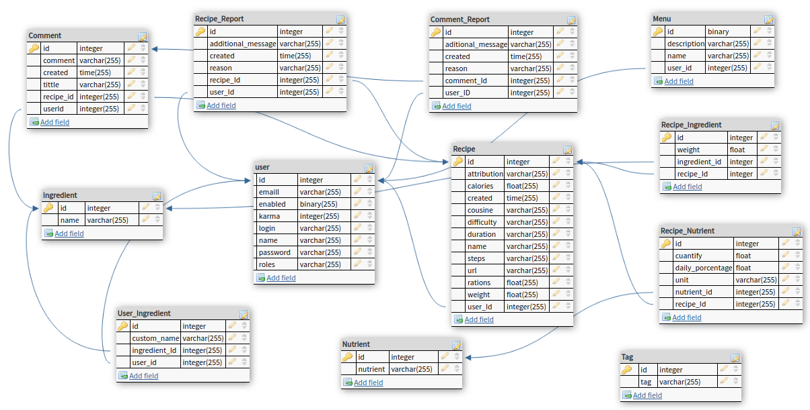

Leeme: Gastrónomo
Objetivo
Seguro que más de una vez cuando te has puesto a preparar la
comida te has dado cuenta de que llevas cocinando los mismos platos
durante años. Sin embargo, por la pereza que te da buscar en Google
recetas nuevas y luego tener que comprar los ingredientes, nunca te
has aventurado a cocinar algo nuevo. Gastrónomo, te permite buscar por
ingredientes, tiempo de preparación, tipo de plato, etc. De una manera
rápida y sencilla, la aplicación te desglosa una serie de platos que
podrías cocinar con lo que tienes en la nevera sin tener que ir al
supermercado. Además, los más foodies pueden colaborar con la
plataforma añadiendo nuevos platos, valorar los que ha probado, subir
fotos y compartir en redes sociales.
Soporta los siguientes roles:
Administrador
- Gestión de contenidos: moderar los nuevos
platos que añaden los usuarios.
- Gestión de usuarios: bloquear usuarios que
incumplan las normas.
- Estadísticas: platos más valorados, visitas,
etc.
Usuarios anónimos
- Búsqueda: cualquier usuario aunque no esté
registrado puede realizar búsquedas por ingrediente, tiempo de
preparación, dificultad, tipo de plato, alérgenos, ordenar por valoraciones,
etc.
Usuarios registrados
Mismas funciones que los usuarios anónimos, pero además:
- Añadir nuevo plato: colaborar con la
comunidad añadiendo un nuevo plato (ingredientes, tipo, tiempo de
preparación, imágenes, descripción).
- Crear menús personalizados: elige una
serie de platos que quieres añadir a tus menús semanales y con la
posibilidad de generar una lista de la compra.
- Guardar ingredientes habituales: escoge una
serie de ingredientes que sueles tener siempre en la nevera para que
Gastrónomo personalice tu experiencia y te muestre primero las
recetas que más te puedan interesar.
- Valorar: valorar platos que haya probado y
añadir a favoritos. Posibilidad de añadir texto e imágenes. Similar a
las valoraciones de Amazon.
- Moderar: los comentarios, imágenes o
recetas de otros usuarios que no cumplan con las políticas de la
comunidad
- Compartir en redes sociales: subir a la
redes sociales una imagen y enlaces del plato elegido.
Base de datos
Generado con db
designer

Vistas
- home - vista inicial.
Permite realizar búsquedas por ingredientes, tiempo, dificultad y
tipo de cocina, ver algunas recetas destacadas, o hacer login
(esquina superior derecha).
- buscar - vista de
resultados del buscador. Se pueden aplicar filtro más avanzados que
los de la home.
- receta - vista de
una receta concreta. Se muestra una descripción, ingredientes,
información nutricional y los pasos que se deben seguir.